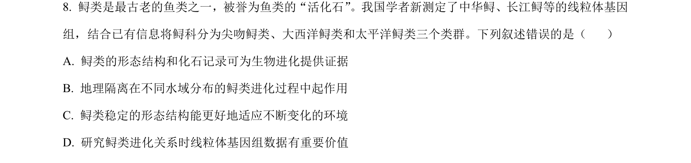
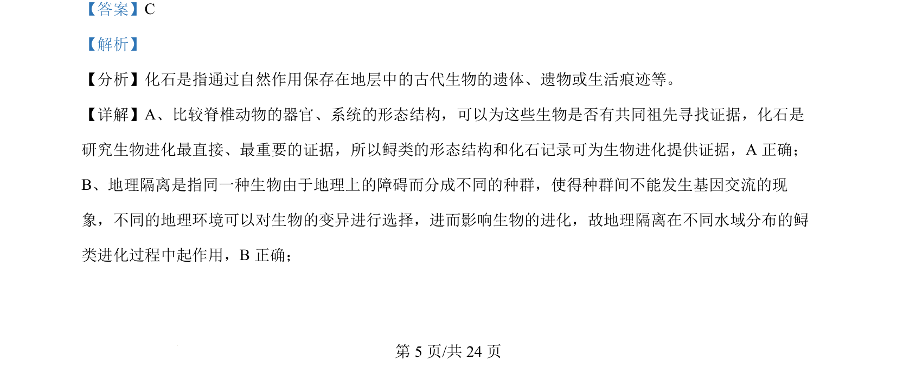
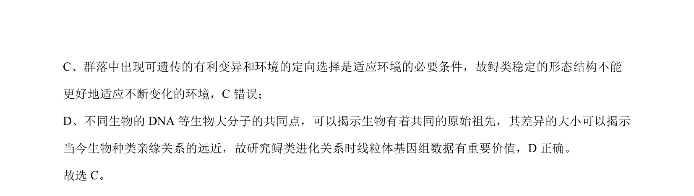

考点：化石证据 共同祖先 地理隔离 自然选择

该题通过鲟类案例考查生物进化证据、地理隔离作用及适应的条件。


📄 原 PDF 第 5 页：
素材/真题/吉林/2008-2024·（吉林）生物高考真题/2024年高考生物试卷（辽宁）（解析卷）.pdf
【答案】C 【解析】 【分析】化石是指通过自然作用保存在地层中的古代生物的遗体、遗物或生活痕迹等。 【详解】A、比较脊椎动物的器官、系统的形态结构，可以为这些生物是否有共同祖先寻找证据，化石是 研究生物进化最直接、最重要的证据，所以鲟类的形态结构和化石记录可为生物进化提供证据，A 正确； B、地理隔离是指同一种生物由于地理上的障碍而分成不同的种群，使得种群间不能发生基因交流的现 象，不同的地理环境可以对生物的变异进行选择，进而影响生物的进化，故地理隔离在不同水域分布的鲟 类进化过程中起作用，B正确；